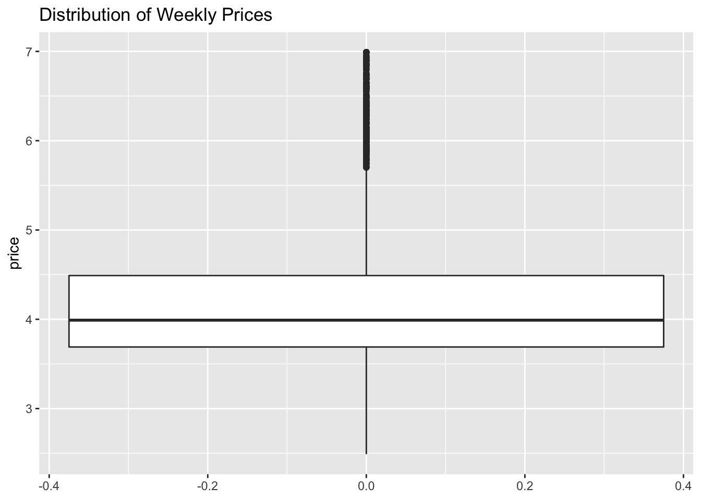
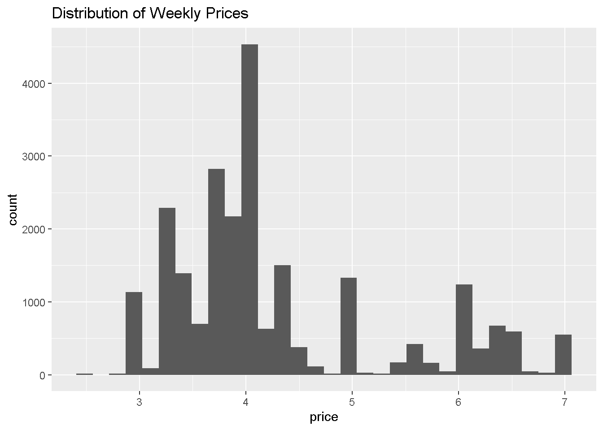
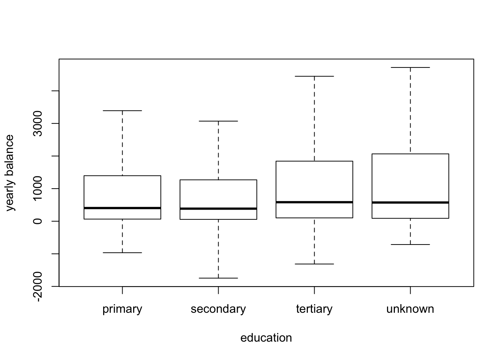
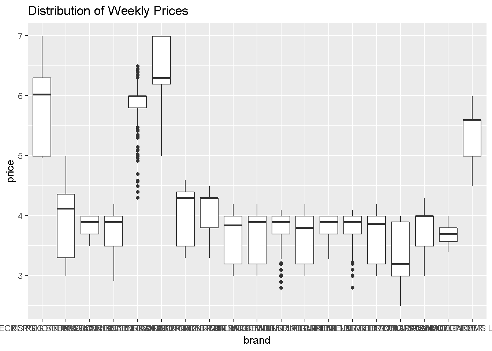
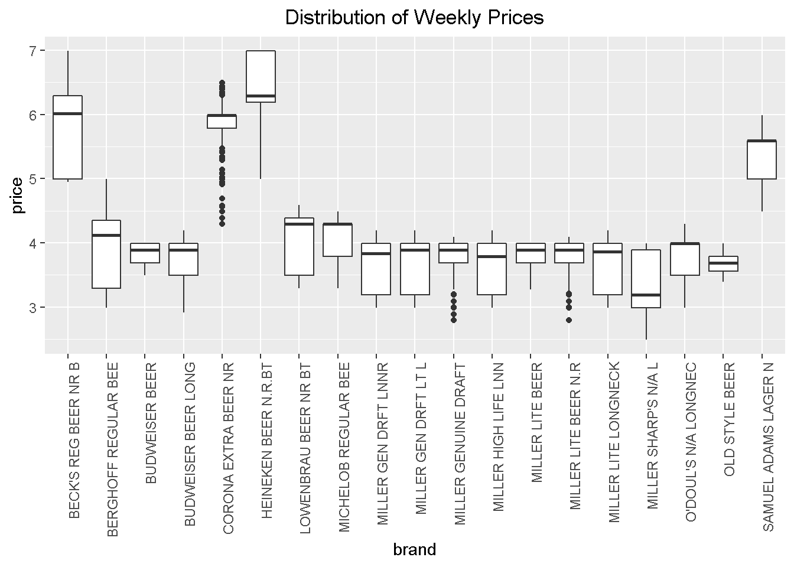

2 Introduction to Data Analytics
2.1 Loading and Inspecting Data Sets
The following line of code reads in the Bank Marketing data set from the UCI Machine Learning Repository (https://archive.ics.uci.edu/ml/index.php).
Notice we used the sep= option to specify the delimiter used in our data file (which is a semicolon “;” in the bank data).
We always want to view the data after importing to make sure all the values were read-in correctly. To inspect the first few lines of a data set, use the head( ) command.
| age | job | marital | education | default | balance | housing | loan | contact | day | month | duration | campaign | pdays | previous | poutcome | y |
|---|---|---|---|---|---|---|---|---|---|---|---|---|---|---|---|---|
| 30 | unemployed | married | primary | no | 1787 | no | no | cellular | 19 | oct | 79 | 1 | -1 | 0 | unknown | no |
| 33 | services | married | secondary | no | 4789 | yes | yes | cellular | 11 | may | 220 | 1 | 339 | 4 | failure | no |
| 35 | management | single | tertiary | no | 1350 | yes | no | cellular | 16 | apr | 185 | 1 | 330 | 1 | failure | no |
| 30 | management | married | tertiary | no | 1476 | yes | yes | unknown | 3 | jun | 199 | 4 | -1 | 0 | unknown | no |
| 59 | blue-collar | married | secondary | no | 0 | yes | no | unknown | 5 | may | 226 | 1 | -1 | 0 | unknown | no |
| 35 | management | single | tertiary | no | 747 | no | no | cellular | 23 | feb | 141 | 2 | 176 | 3 | failure | no |
Finally, we need to attach the data set so that R knows where to find the variables we want to analyze (e.g., age, default, balance).
Now we can access/view any of the variables by typing their name. For example, let’s look at the first 10 observations of the balance variable.
## [1] 1787 4789 1350 1476 0 747 307 147 221 -882.2 Statistical Summaries
We can perform a variety of statistical summaries on our data using R’s built-in functions. A summary of commonly used statistical functions is provided below.
| Statistic | R Function |
|---|---|
| mean |
mean( )
|
| median |
median( )
|
| variance |
var( )
|
| standard deviation |
sd( )
|
| correlation |
cor( )
|
For example, we can compute the mean of the balance variable using the mean( ) function.
## [1] 1423Now suppose we wanted to find the average balance for individuals who have a level of education equal to primary. To do this, we first need to pull the subset of balance observations where education is equal to primary.
Here the closed brackets [ ] allow us to subset the data. We are interested in the balance variable, but now we only want the observations where the condition stated inside the brackets is satisfied.
Note: a double equals sign == is always used when writing logical statements to check equality.
Now we can use the mean( ) function to compute the desired average of balance conditional on a primary education.
## [1] 1412An all-purpose way to compute averages across different factor levels is to use the aggregate( ) function. The first argument specifies the variable we want to average and associated categorical/factor variable, and the second argument specifies the function we want to execute (i.e., the mean).
| education | balance |
|---|---|
| primary | 1412 |
| secondary | 1197 |
| tertiary | 1775 |
| unknown | 1701 |
2.3 Graphical Summaries
Creating visual data summaries in R is also one of its strengths. Examples of useful graphical functions include hist( ), boxplot( ), plot( ), pie( ), barplot( ).
An example of a histogram of yearly balances is shown below.

Here the main= option allows us to customize the plot title. We can also use the breaks= option to control the bin width.

We can also use a boxplot to look at the distribution of balance. To do this, we’ll use the boxplot( ) function.

Notice how the extreme positive values (outliers) make the boxplot hard to analyze. We can remove these outliers with the outline=FALSE option.

We can also use the boxplot( ) function to compare the distribution of balances across education levels.

The first argument here tells R that we want to plot balance against education. Note that the numeric variable (e.g., balance) must always come before the factor variable (e.g., education). We’ve also added labels to the x and y-axes using the xlab= and ylab= options.
We can create scatter plots using the plot( ) function.

The first argument corresponds to the variable on the x-axis, while the second corresponds to the variable on the y-axis.
We can also incorporate information from a third factor variable by adding color to the scatter plot. For example, suppose we wanted to see who currently has a loan with the bank.
plot(age, balance, col=ifelse(loan=="no",8,4), pch=ifelse(loan=="no",1,16))
legend("topleft", legend=c("no","yes"), pch=c(1,16), col=c(8,4), title="loan")
The col= option in the first line adds color to each dot conditional on the value of the term deposit variable y. The ifelse(loan=="no",8,4) condition reads if loan is equal to no, then the color should be equal to 8 (gray) otherwise it equals 4 (blue). Conditional formatting is also applied to the point type option pch where a value of 1 is an open circle and a value of 16 is a closed circle.
The second line adds a legend to the plot so that we know what the colors correspond to. The first argument indicates the legend position, the second argument legend indicates the values to be shown on the legend, the third argument pch is the point type, the fourth argument col is the color for each value, and the fifth argument title adds a custom title.